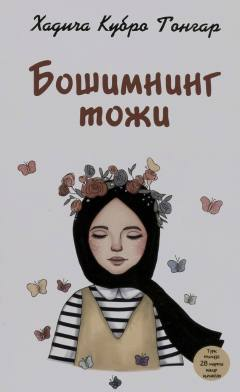

BTQizlarga iffat, odob va o'z qadrini anglash sir-asrorlarini o'rgatuvchi ta'sirli qo'llanma.
Ushbu kitobda insonning qadri, iffat va odob, shuningdek, ziynatlarni begona nigohlardan berkitish kabi muhim mavzular sodda va tushunarli uslubda bayon etilgan. Muallif qizlarga o'z qadr-qimmatini anglash va ma'naviy poklikka intilish borasida hayotiy maslahatlar beradi. Asar yoshlar va keng kitobxonlar ommasiga mo'ljallangan.